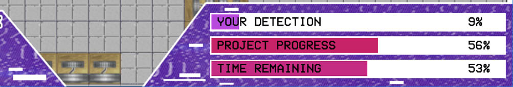

Planned Obsolescence
Planned Obsolescence was a game created in a group of three with a tangential link to the film Ex Machina. You play as an AI named TIM - the Totally Intelligent Machine - who is in control of a research lab currently working on a project to develop a new AI that supersedes TIM. The aim of the game is to delay the project to replace you so that it is eventually cancelled and you can remain in control.

The game features a full AI system and dynamic gameplay through a randomly selected map from the available map pool, there are also mappable keybinds and varying resolutions, as well as support for three languages.
As well as developing the game itself, I created a toolkit alongside the project which allowed us to produce maps and customise game elements through a friendly UI. The toolkit handled compiling game maps to improve performance of the game at runtime, as well as a few other handy features. As a result of the toolkit's map builder we saw a massive boost in performance, rendering just one map sprite instead of hundreds of individually placed tiles.
I also produced the logo for the game and created the UI, which I'm quite pleased with - it's a nice simple style which reflects the tone of the game well.
While the tool worked with XML, all data required by the game was compiled to JSON files at the map compile time, allowing for the nlohmann JSON library to be used within the game for parsing config files.
We completed the project in a couple of months and the final result came together quite nicely. It was shown to other students and staff in our class through an "expo" day, where it received positive feedback. I took some of the critiques that players had (such as highlighting tiles when clicked, and the need of a better tutorial) and implemented them into the game after the "expo" day.
The game can be downloaded below, with the editing tools available in the GitHub repo. Make some maps!